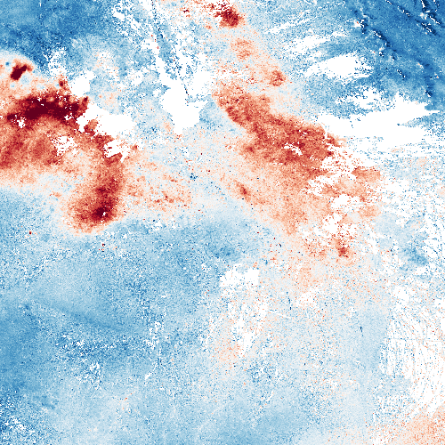

Latest Consecutive Pair Step:-1.03 cm LOS (2026-10-09 to 2026-10-21 at p01: 30.523N 55.774E; cumulative at point: -5.76 cm)
Affected Population (GHSL GHS-POP E2025, 108d eq., ≥ 0.66 cm 2σ): 2,367 residents (< -2 cm), 10 residents across 0.38 km² (< -5 cm).
Top 3 Most-Subsiding Areas
Rank
1 km Block Center (Lat, Lon)
Cumulative LOS
Rate
#1
30.5232, 55.7738
-3.50 cm
-2.92 cm/100d
#2
30.5700, 55.7624
-3.39 cm
-2.83 cm/100d
#3
30.4113, 55.8510
-3.02 cm
-2.52 cm/100d
Top 5 At-Risk Infrastructure Segments
Infrastructure corridor ranking (OSM canal/road overlay) has not been computed for this regional subset yet.
GNSS Comparison & Calibration Status
Continuous GNSS time-series validation was not bundled for this regional subset.
Cumulative Displacement Map

Cumulative LOS displacement (2026-06-23 to 2026-10-21, 9 NISAR L2 GUNW pairs).
What This Means
Ground in Rafsanjan (Iran) subsided up to -5.8 cm LOS (-4.8 cm/100d) between 2026-06-23 and 2026-10-21, consistent with active seasonal compaction.
About 2,367 residents live on ground sinking faster than 2 cm per 108 days (and 10 residents across 0.38 km2 faster than 5 cm per 108 days, above the 0.66 cm 2-sigma noise floor).
No local GNSS or canal-tilt overlay is bundled for this subset; field inspection and local piezometer records are needed to confirm infrastructure impacts.
Calibration & Quality Notice (PROVISIONAL): NISAR data are provisional. Calibration and validation are carried out by the NISAR project (NASA-JPL and ISRO), not by our team. Sources: NASA-ISRO NISAR L2 GUNW (CRID P05023 via ASF DAAC); GHSL GHS-POP E2025 R2023A (JRC, CC BY 4.0); Nevada Geodetic Laboratory GNSS; OpenStreetMap (ODbL).